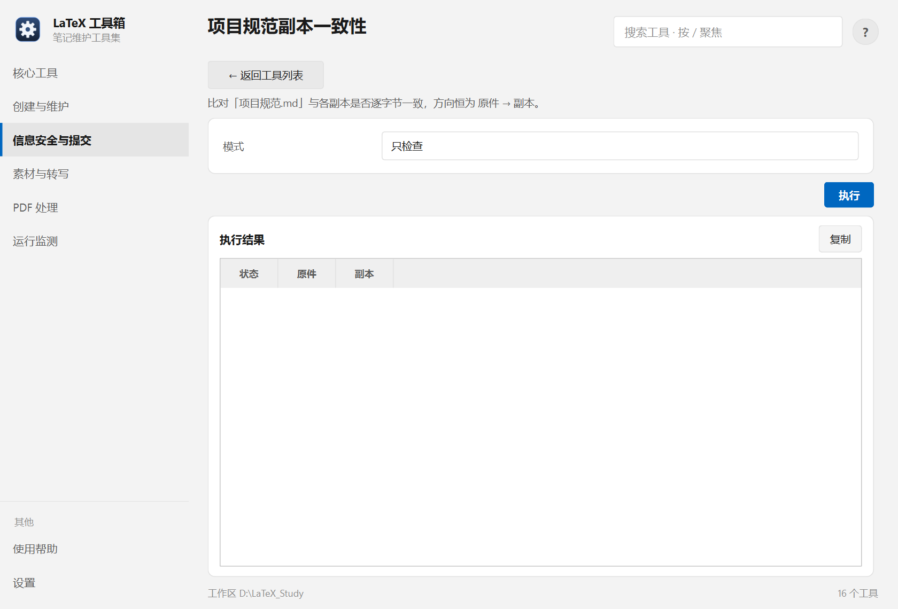

帮助目录 · 信息安全与提交
比对工作区根的 项目规范.md 与各仓库里的副本是否逐字节一致，并把原件同步过去。
| 面板入口 | 信息安全与提交 → 卡片「项目规范副本一致性」→ 选模式 → 执行 |
|---|---|
| 命令行 | python tools/spec_sync/spec_sync.py |

三档模式：只检查 / 直接同步 / 防呆同步。
| 项 | 说明 |
|---|---|
| 模式 | 只检查 / 直接同步 / 防呆同步（先比对再写，推荐）。 |
python tools/spec_sync/spec_sync.py --check python tools/spec_sync/spec_sync.py --sync --safe
| 内容 | 位置 |
|---|---|
| 原件 | 工作区根的 项目规范.md |
| 副本 | 各仓库里的同名文件（配对关系由工具内置） |
Q：某个仓库的副本被改过，同步会覆盖吗？
A：防呆同步会先报差异再写；直接同步则无条件覆盖。所以默认先用「只检查」。
Q：能不能反向同步（副本 → 原件）？
A：不能，这是刻意的设计：原件是唯一真源，反向会引入多源。
Q：提示某个仓库找不到副本
A：该仓库没装过规范文件。要装的话，工具会新建一份。